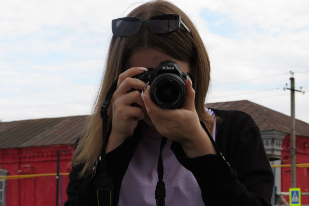

Я стала проходить специализированные курсы,
чтобы улучшить свои навыки по обработке
и редактированию фотографий.
Открыла для себя новые техники съемки,
экспериментировала с разными видами фотографии,
такими как пейзажи, портреты,
ночная и уличная фотография.
Мне было интересно изучать разные жанры
и находить собственный стиль.